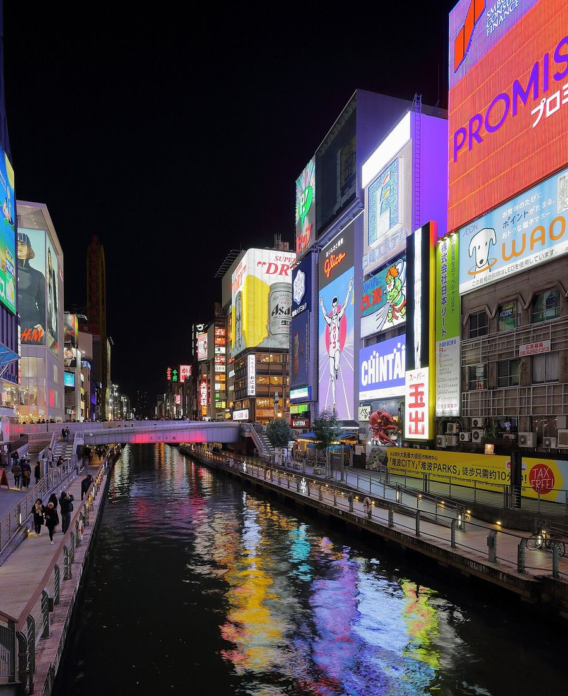
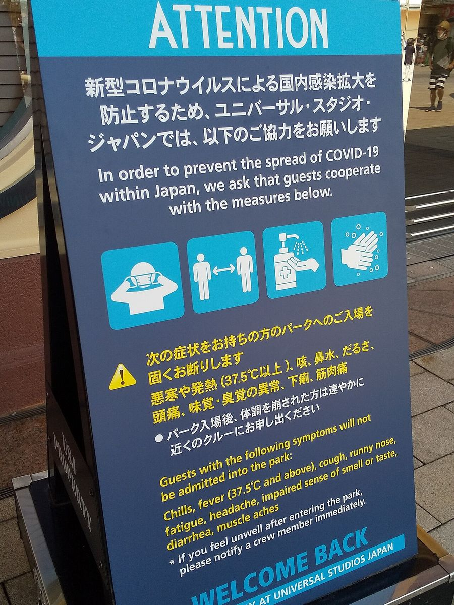
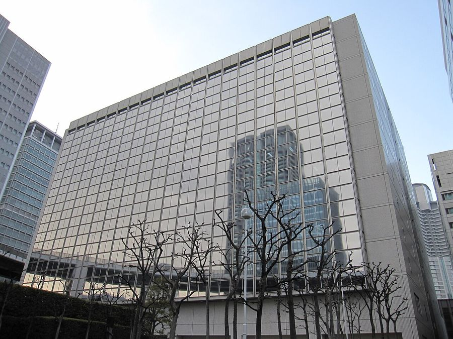

Osaka
Japan · 34.6500°N 135.4300°E
Lâu đài Osaka — tháp chính
DXR · CC BY-SA 4.0
Make this Notebook Trusted to load map: File -> Trust Notebook
Điểm tham quan
Lâu đài Osaka

Dotonbori – Glico Man, Kuromon Ichiba

Universal Studios Japan
Umeda Sky Building
Shitennō-ji
Kaiyukan Aquarium
Kyoto ≈30 phút (Fushimi Inari, Kiyomizu-dera, Arashiyama)
not found
Nara (chùa Tōdai-ji, công viên hươu)
Dệt may & smart textile

- **Toyobo** (thành lập tại Osaka, 1882) — **COCOMI™**, màng dẫn điện co giãn dày 0,3 mm dùng làm điện cực cho smart sensing wear; đo nhịp tim, nhịp thở, hoạt động cơ (cả người lẫn ngựa đua). Tương đương trực tiếp với lớp điện cực dệt của Myant / Nextiles. - **Toray Industries** — **hitoe™** (hợp tác NTT/NTT Docomo): vải nanofiber tẩm polymer dẫn điện làm bio-electrode; đã được cấp phép dùng trong y tế. - **Mitsufuji** (Kyoto/Shiga, sát Osaka) — **AGposs®** sợi mạ bạc (conductive yarn thương mại) và hệ IoT mặc trên người **hamon®**. - Cụm dệt Kansai truyền thống: Gunze, Kurabo, Shikibo, Daiwabo; Senshu (khăn bông), Kishiwada
{kind=link}